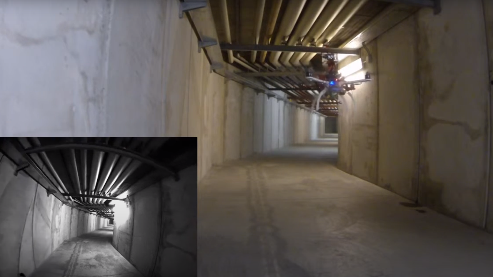

Design and prototyping of a flying system able to carry out autonomous inspection of tunnels. Exploiting the concept of Data Muling, the UAV is able to navigate inside a GPS-denied environment without any help from an operator, collecting data from pre-disposed BLE (Bluetooth Low Energy) modules. A 3D model of the inspected environment is then created offline using photogrammetry techniques. [ VIDEO ]
Autonomous Indoor UAV Navigation & Mapping Exploration and navigation of unknown, GPS-denied corridod-like environments using an UAV built with off the shelf components. The main used sensors are a 2D Lidar laser scanner range finder and a Pixhawk flight controller. All computation performed onboard. [ VIDEO ]
Arduino mini CNC plotter with recycled CD/DVD Drives
A simple mini CNC plotter realized with some old CD Drives found in the basement. [ VIDEO ]